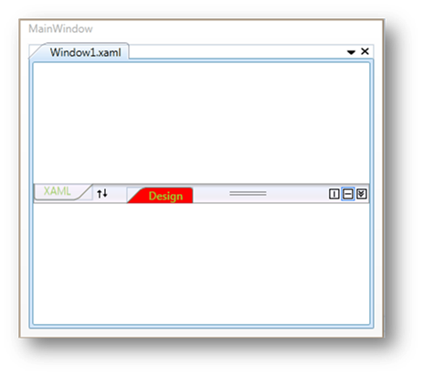

The appearance of the TabSplitter control is customized by using the appearance properties available in the control. You can set the color for the MouseOver Background, MouseOver Foreground, Selected Foreground and Selected Background of the TabSplitter control. Here is the code snippet.
|
[XAML]
<!-- Adding TabSplitter With Selected Brush --> <syncfusion:TabSplitter Name="tabsplitter" MouseOverBackground="Green" MouseOverForeground="Yellow" SelectedBackground="Red" SelectedForeground="YellowGreen">
<!-- Adding TabSplitterItem --> <syncfusion:TabSplitterItem Header="Window1.xaml" Name="tabSplitterItem1">
<!-- Adding TopPanelItems --> <syncfusion:TabSplitterItem.TopPanelItems> <!-- Adding SplitterPage --> <syncfusion:SplitterPage Name="splitterPage1" Header="XAML"> </syncfusion:SplitterPage> </syncfusion:TabSplitterItem.TopPanelItems>
<!-- Adding BottomPanelItems --> <syncfusion:TabSplitterItem.BottomPanelItems> <!-- Adding SplitterPage --> <syncfusion:SplitterPage Name="splitterPage2" Header="Design"> </syncfusion:SplitterPage> </syncfusion:TabSplitterItem.BottomPanelItems>
</syncfusion:TabSplitterItem>
</syncfusion:TabSplitter> |
|
[C#]
// Set the selected background. tabsplitter.SelectedBackground = Brushes.Red;
// Set the selected foreground. tabsplitter.SelectedForeground = Brushes.YellowGreen;
// Set the MouseOverBackground. tabsplitter.MouseOverBackground = Brushes.Green;
// Set the MouseOverForeground. tabsplitter.MouseOverForeground = Brushes.Yellow;
|

Figure 1023: Customized TabSplitter Control